"Milli ve kurumsal disiplinle, güçlü bir Türkiye ideali doğrultusunda milletimize ve İstanbul'umuza hizmet ediyoruz."
Cumhuriyetimizin kurucusu Gazi Mustafa Kemal Atatürk'ün ilkeleri, Kurucu Liderimiz Alparslan Türkeş'in vizyonu ve Genel Başkanımız Sayın Dr. Devlet Bahçeli'nin liderliğinde çalışmalarımızı kararlılıkla sürdürüyoruz.


"İstanbul'un her ilçesinde vatandaşlarımızla buluşuyor, şehrimizin ihtiyaçlarına akılcı ve kalıcı çözümler üretiyoruz."
İl Başkanlığımızın koordinasyonunda, teşkilat mensuplarımızla birlikte İstanbul'umuzun geleceğini inşa etmek için sahadayız.

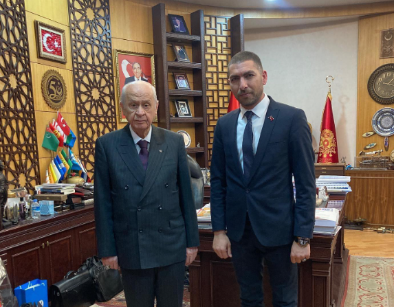
1982 yılında Kars'ın Arpaçay ilçesinde dünyaya geldi. İlk, orta ve lise öğrenimini İstanbul'da tamamladı. Lisans eğitimine Anadolu Üniversitesi İşletme Fakültesinde devam etmektedir.
İş hayatında 2004 yılından itibaren özel güvenlik ve kurumsal hizmet sektörlerinde üst düzey yöneticilik ve girişimcilik faaliyetlerinde bulunarak, Pars Şirketler Grubu bünyesindeki Pars Security ve Pars Tunga firmalarının Yönetim Kurulu Başkanlığını yürütmektedir.
Uzun yıllardır Milliyetçi Hareket Partisi bünyesinde çeşitli kademelerde görev alan ÖZTÜRK, sivil toplum alanında Türk Dünyası Yardımlaşma ve Dayanışma Derneği (2021) ile TUDAK (2022) Genel Sekreterliği görevlerini üstlenmiştir. Halen Milliyetçi Hareket Partisi İstanbul İl Başkan Yardımcılığı görevini yürütmektedir. Evli ve 2 çocuk babasıdır.
Yönetim Kurulu Bşk.
TUDAK Genel Sekreteri
İstanbul'un ekonomik rekabet gücünü artırmak, afetlere dirençli modern şehircilik altyapısını kurmak ve hemşehrilerimizin yaşam kalitesini yükseltmek için hazırlanan kurumsal vizyonumuz.
Çalışmalarımızda temel aldığımız milli, ahlaki ve kurumsal değerler.
MHP İstanbul İl Teşkilatımızın saha çalışmaları, mitingleri, lider buluşmaları ve tarihi anlarından özel kareler.

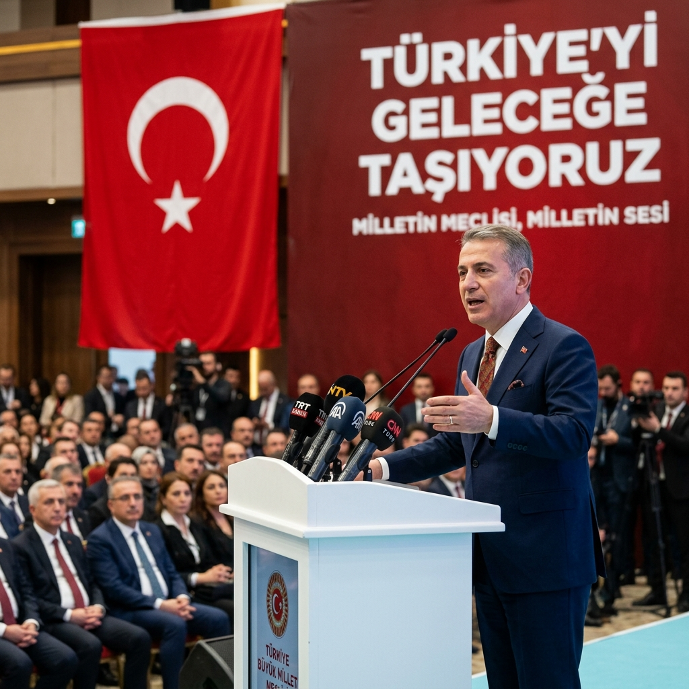
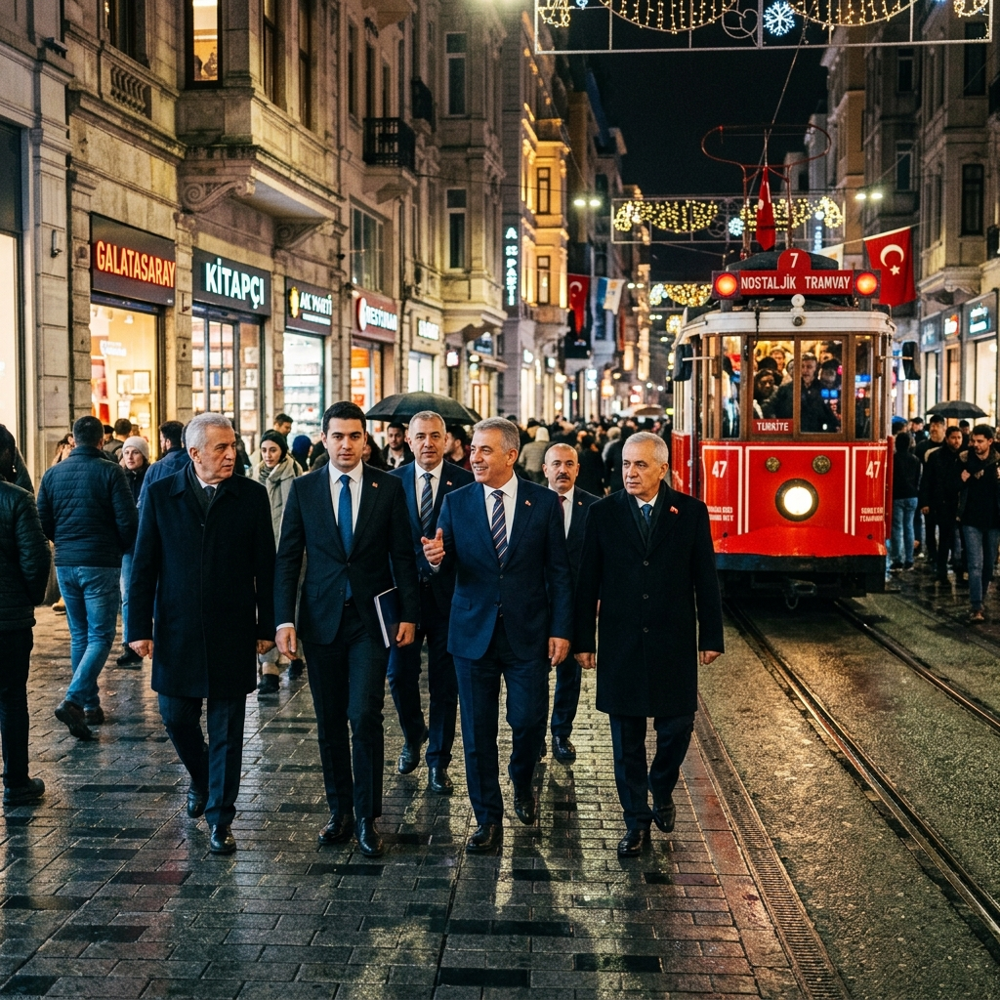


Kürsü hitapları, canlı yayın kayıtları, röportajlar ve sahadaki coşkulu buluşmalarımızın görüntülü kayıtları.
04:20
05:40
İstanbul'umuzun geleceğine yönelik çalışma ve projelerimize katkı sunmak, görüş ve önerilerinizi iletmek için bizimle doğrudan iletişime geçebilirsiniz.
İstanbul, Türkiye
+90 (212) 123 45 67
iletisim@uygaroralozturk.com
Sosyal Medya Akışı
Canlı Faaliyetler & Son Paylaşımlar
Gerek şahsi çalışmalarımızı gerekse MHP İstanbul İl Teşkilatımızın güncel saha faaliyetlerini sosyal medya akışlarımızdan anbean takip edebilirsiniz.
milliyetcihareketpartisi
Milliyetçi Hareket Partisi 🇹🇷
MHP Genel Merkezi Resmi Instagram Hesabı
www.mhp.org.tr
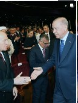
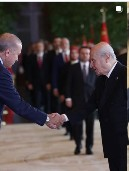
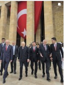
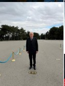
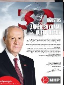
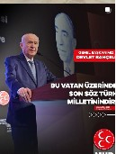
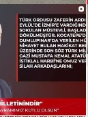
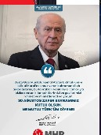
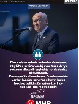
Milliyetçi Hareket Partisi (MHP)
Genel Başkanımız Sayın Devlet BAHÇELİ, Cumhurbaşkanlığı Külliyesi'nde düzenlenen 30 Ağustos Zafer Bayramı Özel Programı'na katıldı.
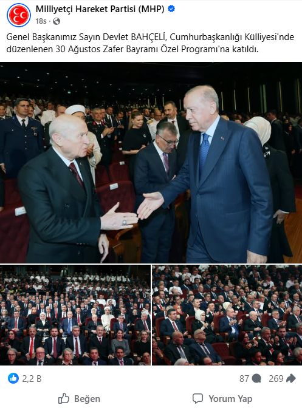
mhpistanbul
MHP İstanbul İl BaşkanlığıMHP İstanbul İl Başkanlığı
uygaroral
Uygar Oral Öztürk 🇹🇷
#MHP İSTANBUL İl Başkan YRD. 🇹🇷
MHP İST 26.27.28.Dönem Milletvekili Adayı
PARSGRUP Yönetim Kurulu Başk
Uygar Oral Öztürk
29 Ağustos 2026 tarihinde Beşiktaş Akatlar Spor Kompleksinde gerçekleştireceğimiz İl Başkanlığı Olağan Kongremizle ilgili devam eden hazırlık çalışmalarını İl Başkanımız ve teşkilatımızla birlikte yerinde inceledik.